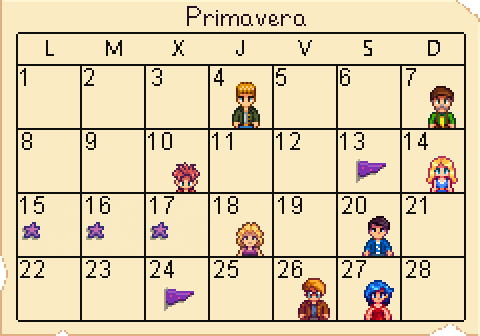

Cuaderno del tiempo
Calendario del Valle
Una vista rápida de los 28 días de cada estación. Tocá una casilla marcada para recordar un cumpleaños o un evento.
Almanaque anual
Primavera

Las casillas con evento o cumpleaños son interactivas.
Referencia:
las ilustraciones del calendario están almacenadas localmente en el proyecto. Las fechas y nombres de eventos se contrastan con la
Stardew Valley Wiki
.